我将直接跳入定义和严格度，因此，如果您还没有阅读上一篇 激发奇异值分解的文章，请先回去做。这篇文章将是定理，证明，算法，数据。我们测试的数据集是一千层的CNN新闻数据集。像往常一样，本文中使用的所有数据，代码和示例都在github存储库中。
我们从最佳近似
定义： 我们


让我通过最小化平方距离的总和来阐明我的意思。首先，我们从一个简单的案例开始：我们有一个vector 


我说，粉红色矢量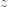的图片是黑色和绿色载体的差异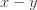，并认为“距离”，从
让我们放弃一些符号。我打电话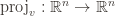的线性映射，作为输入向量
点积公式对我们很有用，因为它允许我们通过取点积来计算投影的平方长度
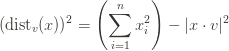
该公式只是对垂直向量的勾股定理的重述。
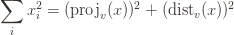
特别是，我们最初称为差向量的长度为平方
如果我们试图为一组数据点找到最佳的近似一维子空间
有了一些轻微的代数，我们就能使我们的生活更轻松。简短的版本：最小化平方距离的总和与最大化 投影的平方长度的总和是一回事 。较长的版本：让我们回到单个点
的平方长度

这意味着如果我们要最小化平方距离，我们可以改为 最大化平方投影。最大化减去的东西可使整个表达式最小化。
如果您要对中的所有数据点求和，则其工作方式相同


此时，您应该在思考，
太好了，我们写下了一个优化问题：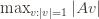。如果我们能解决这个问题，我们将对的行中包含的数据拥有最佳的一维线性近似
。但是（1）我们如何解决这个问题？并且（2）您答应了-
维近似子空间。我感到出卖了！骗了！竹签！
这是奇妙的事情。我们可以有效地解决一维优化问题（我们将在本文后面进行处理），并且（2）由以下定理回答。
SVD定理：计算最佳一
在介绍术语“奇异值”和“奇异矢量”之后，我们将证明这一点。
奇异值和向量
正如我刚才所说，我们可以

相应的第一个奇异值表示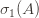为优化目标的最大值，即

现在，我们在这里看到从- 

SVD定理表明，所跨越的子空间
我们可以继续这个过程。递归定义

附带说明一下，由于我们将奇异值定义为“嵌套”优化问题的目标值的方式，奇异值不断减小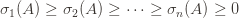。这很明显：您只选择第二个优化问题，因为您已经选择
如果继续这样做，则会发生以下两种情况之一。要么到达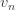，要么由于域为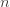维，因此没有剩余矢量可供选择，这
或者，您可以进入一个阶段 
让我们进行快速的完整性检查：我们如何知道奇异向量
回到奇异矢量，上一篇文章的讨论直观地告诉我们，数据可能永远不会存在于小的子空间中。您永远都不会期望找到奇异向量的过程在step之前停止，如果您这样做，您会退后一步，问是否有更深层次的事情发生。相反，在现实生活中，您可以指定要捕获的数据量，并一直计算奇异向量，直到超过阈值为止。另外，您可以通过固定将要提前计算的奇异向量的数量来指定要花费的计算资源量，并满足-
在讨论任何代码或解决一维优化问题之前，我们先证明SVD定理。
SVD定理的证明。
回想一下，我们试图证明第一个

令其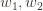为任何正交基础，并令其为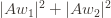我们试图最大化的数量（并通过假设使其最大化）。此外，我们可以选择与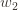 垂直的基向量
现在，由于
对于的一般情况


现在还记得在上一篇文章中，我们首先将SVD的定义定义为矩阵的分解


为了重申上篇文章中的想法 
因此，让我们确定必须要做的事情。我们选择


如果将这些想法放在一起，则可以确切地说出

如果您在最近几个月中一直在仔细阅读此博客，那么您会发现写上述等式的最后一行的一种很好的方法。这是一种外部产品。因此，根据您喜欢的符号，您可以将其写为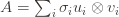或
让我们继续一些代码。
黑匣子的例子
在我们从头开始实现SVD（从我的灵魂深处命令我的冲动！）之前，让我们看一个使用现有工具的黑盒示例。为此，我们将使用numpy库。
回顾上一篇文章的电影评分矩阵：

计算此矩阵的svd的代码非常简单：
1个 2 3 4 5 6 7 8 9 10 11 12 13 14 | from numpy.linalg import svdmovieRatings = [ [2, 5, 3], [1, 2, 1], [4, 1, 1], [3, 5, 2], [5, 3, 1], [4, 5, 5], [2, 4, 2], [2, 2, 5],]U, singularValues, V = svd(movieRatings) |
打印这些值给出
1个 2 3 4 5 6 7 8 9 10 11 12 | [[-0.39458526 0.23923575 -0.35445911 -0.38062172 -0.29836818 -0.49464816 -0.30703202 -0.29763321] [-0.15830232 0.03054913 -0.15299759 -0.45334816 0.31122898 0.23892035 -0.37313346 0.67223457] [-0.22155201 -0.52086121 0.39334917 -0.14974792 -0.65963979 0.00488292 -0.00783684 0.25934607] [-0.39692635 -0.08649009 -0.41052882 0.74387448 -0.10629499 0.01372565 -0.17959298 0.26333462] [-0.34630257 -0.64128825 0.07382859 -0.04494155 0.58000668 -0.25806239 0.00211823 -0.24154726] [-0.53347449 0.19168874 0.19949342 -0.03942604 0.00424495 0.68715732 -0.06957561 -0.40033035] [-0.31660464 0.06109826 -0.30599517 -0.19611823 -0.01334272 0.01446975 0.85185852 0.19463493] [-0.32840223 0.45970413 0.62354764 0.1783041 0.17631186 -0.39879476 0.06065902 0.25771578]][ 15.09626916 4.30056855 3.40701739][[-0.54184808 -0.67070995 -0.50650649] [-0.75152295 0.11680911 0.64928336] [ 0.37631623 -0.73246419 0.56734672]] |
现在这有点奇怪，因为矩阵

为了求平方矩阵，人们有时要做的就是取这两个基数
我们仍然可以通过编程方式使用它。通过围绕numpy的形状进行模糊处理以获得对角线矩阵，我们可以从这些因子中重建输入等级矩阵。
1个 2 3 4 5 6 | Sigma = np.vstack([ np.diag(singularValues), np.zeros((5, 3)),])print(np.round(movieRatings - np.dot(U, np.dot(Sigma, V)), decimals=10)) |
正如人们所期望的，输出是全零的矩阵。这意味着我们分解了电影分级矩阵，并根据这些因素进行了构建。
实际上，我们可以通过将特殊标志传递给numpy的svd来获得我们定义的SVD（使用矩形矩阵）。
1个 2 3 4 5 6 7 | U, singularValues, V = svd(movieRatings, full_matrices=False)print(U)print(singularValues)print(V)Sigma = np.diag(singularValues)print(np.round(movieRatings - np.dot(U, np.dot(Sigma, V)), decimals=10)) |
结果
1个 2 3 4 5 6 7 8 9 10 11 12 13 14 15 16 17 18岁 19 20 | [[-0.39458526 0.23923575 -0.35445911] [-0.15830232 0.03054913 -0.15299759] [-0.22155201 -0.52086121 0.39334917] [-0.39692635 -0.08649009 -0.41052882] [-0.34630257 -0.64128825 0.07382859] [-0.53347449 0.19168874 0.19949342] [-0.31660464 0.06109826 -0.30599517] [-0.32840223 0.45970413 0.62354764]][ 15.09626916 4.30056855 3.40701739][[-0.54184808 -0.67070995 -0.50650649] [-0.75152295 0.11680911 0.64928336] [ 0.37631623 -0.73246419 0.56734672]][[-0. -0. -0.] [-0. -0. 0.] [ 0. -0. 0.] [-0. -0. -0.] [-0. -0. -0.] [-0. -0. -0.] [-0. -0. -0.] [ 0. -0. -0.]] |
由于我们可以直接对所有内容进行乘法运算，而不必在上添加额外的零行，因此这使得重构的混乱程度降低了
关于电影等级矩阵，奇异的向量和值告诉我们什么？（除了什么，因为这是一个人为的示例），您会注意到第一个奇异向量，

贪婪优化例程
现在，我们将从头开始编写SVD。我们将首先针对一维优化问题实施贪婪算法，然后执行归纳步骤以获得完整算法。然后，我们将在CNN数据集上运行它。
我们将用于解决一维问题的方法不一定具有行业优势（有关此行业实力的提示，请参阅本文档），但是从概念上讲很简单。这就是所谓的幂法。既然我们有了定理的分解，就很容易理解幂方法的工作原理。
让我们以矩阵分解的语言进行工作，使用该语言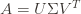进行实践比其他任何事情都要多（使用外部乘积将使我们得到相同的结果，但计算方式略有不同）。然后观察

因此，我们可以完全从讨论中消除，只看


定理： 设
证明。从随机单位向量开始


这意味着只要第一个奇异值 


的确，这个比率是公正的，并且该指数的底数大于1。
如果您想更加精确一些，并找到收敛所需迭代次数的界限，则可以。令人担心的是，您的随机起始向量与较小的奇异向量之一“太近” 
我们不会计算出精确的迭代次数。相反，我们将只计算，直到之间的角度和很小。这是算法
1个 2 3 4 5 6 7 8 9 10 11 12 13 14 15 16 17 18岁 19 20 21 22 23 24 25 26 27 28 29 30 | import numpy as npfrom numpy.linalg import normfrom random import normalvariatefrom math import sqrtdef randomUnitVector(n): unnormalized = [normalvariate(0, 1) for _ in range(n)] theNorm = sqrt(sum(x * x for x in unnormalized)) return [x / theNorm for x in unnormalized]def svd_1d(A, epsilon=1e-10): ''' The one-dimensional SVD ''' n, m = A.shape x = randomUnitVector(m) lastV = None currentV = x B = np.dot(A.T, A) iterations = 0 while True: iterations += 1 lastV = currentV currentV = np.dot(B, lastV) currentV = currentV / norm(currentV) if abs(np.dot(currentV, lastV)) > 1 - epsilon: print("converged in {} iterations!".format(iterations)) return currentV |
我们从一个随机单位向量开始

并在我们的电影分级示例中使用它：
1个 2 3 4 5 6 7 8 9 10 11 12 13 | if __name__ == "__main__": movieRatings = np.array([ [2, 5, 3], [1, 2, 1], [4, 1, 1], [3, 5, 2], [5, 3, 1], [4, 5, 5], [2, 4, 2], [2, 2, 5], ], dtype='float64') print(svd_1d(movieRatings)) |
结果
1个 2 | converged in 6 iterations![-0.54184805 -0.67070993 -0.50650655] |
请注意，向量的符号可能与numpy的输出不同，因为我们从随机向量开始。
从递归

如果还不够清楚，那么这里是代码。
1个 2 3 4 5 6 7 8 9 10 11 12 13 14 15 16 17 18岁 19 20 21 | def svd(A, epsilon=1e-10): n, m = A.shape svdSoFar = [] for i in range(m): matrixFor1D = A.copy() for singularValue, u, v in svdSoFar[:i]: matrixFor1D -= singularValue * np.outer(u, v) v = svd_1d(matrixFor1D, epsilon=epsilon) # next singular vector u_unnormalized = np.dot(A, v) sigma = norm(u_unnormalized) # next singular value u = u_unnormalized / sigma svdSoFar.append((sigma, u, v)) # transform it into matrices of the right shape singularValues, us, vs = [np.array(x) for x in zip(*svdSoFar)] return singularValues, us.T, vs |
我们可以在电影分级矩阵上运行此代码，以获取以下内容
1个 2 3 4 5 6 7 8 9 10 11 12 13 14 15 16 | >>> theSVD = svd(movieRatings)>>> theSVD[0]array([ 15.09626916, 4.30056855, 3.40701739])>>> theSVD[1]array([[ 0.39458528, -0.23923093, 0.35446407], [ 0.15830233, -0.03054705, 0.15299815], [ 0.221552 , 0.52085578, -0.39336072], [ 0.39692636, 0.08649568, 0.41052666], [ 0.34630257, 0.64128719, -0.07384286], [ 0.53347448, -0.19169154, -0.19948959], [ 0.31660465, -0.0610941 , 0.30599629], [ 0.32840221, -0.45971273, -0.62353781]])>>> theSVD[2]array([[ 0.54184805, 0.67071006, 0.50650638], [ 0.75151641, -0.11679644, -0.64929321], [-0.37632934, 0.73246611, -0.56733554]]) |
根据我们的numpy输出进行检查，表明它处于合理的精度水平内（考虑幂方法采用十次迭代的顺序！）
1个 2 3 4 5 6 7 8 9 10 11 12 13 14 15 | >>> np.round(np.abs(npSVD[0]) - np.abs(theSVD[1]), decimals=5)array([[ -0.00000000e+00, -0.00000000e+00, 0.00000000e+00], [ 0.00000000e+00, -0.00000000e+00, 0.00000000e+00], [ 0.00000000e+00, -1.00000000e-05, 1.00000000e-05], [ 0.00000000e+00, 0.00000000e+00, -0.00000000e+00], [ 0.00000000e+00, -0.00000000e+00, 1.00000000e-05], [ -0.00000000e+00, 0.00000000e+00, -0.00000000e+00], [ 0.00000000e+00, -0.00000000e+00, 0.00000000e+00], [ -0.00000000e+00, 1.00000000e-05, -1.00000000e-05]])>>> np.round(np.abs(npSVD[2]) - np.abs(theSVD[2]), decimals=5)array([[ 0.00000000e+00, 0.00000000e+00, -0.00000000e+00], [ -1.00000000e-05, -1.00000000e-05, 1.00000000e-05], [ 1.00000000e-05, 0.00000000e+00, -1.00000000e-05]])>>> np.round(np.abs(npSVD[1]) - np.abs(theSVD[0]), decimals=5)array([ 0., 0., -0.]) |
因此，我们有它。我们在svd函数中增加了一点点，该参数
CNN故事
SVD的一种有趣用途是主题建模。主题建模是获取一堆文档（新闻，电子邮件，电影脚本等）并将其按主题分组的过程，算法可以选择要算作“主题”的部分。主题建模只是名称人们使用自然语言处理而不是聚类。
SVD可以如下帮助一个模型主题。首先，构造一个

关键不是我们如何标准化数据，而是SVD 在这种情况下意味着什么。回想一下
假设您采用的3级近似值
我们将在这篇文章中使用的数据集是一个相对较小的语料库，其中包含从2012年挑选的一千个CNN故事。这是其中一个的摘录
1个 2 3 | $ cat data/cnn-stories/story479.txt3 things to watch on Super TuesdayHere are three things to watch for: Romney's big day. He's been the off-and-on frontrunner throughout the race, but a big Super Tuesday could begin an end game toward a sometimes hesitant base coalescing behind former Massachusetts Gov. Mitt Romney. Romney should win his home state of Massachusetts, neighboring Vermont and Virginia, ... |
因此，让我们首先使用规范化的值构建此文档术语矩阵，然后我们将其计算为SVD并查看主题的外观。
步骤1是清除数据。我们使用了nltk 库中的一堆例程，将其归结为以下循环：
1个 2 3 4 5 6 | for filename, documentText in documentDict.items(): tokens = tokenize(documentText) tagged_tokens = pos_tag(tokens) wnl = WordNetLemmatizer() stemmedTokens = [wnl.lemmatize(word, wordnetPos(tag)).lower() for word, tag in tagged_tokens] |
这会将超级星期二的故事变成单词列表（重复）：
1个 | ["thing", "watch", "three", "thing", "watch", "big", ... ] |
如果您会发现罗姆尼这个名字没有出现在单词列表中。我只保留出现在最常见的100,000个英语单词中的单词，然后将所有单词根词化。这不是一个完美的数据清理工作，但是对于我们的目的而言它既简单又足够好。
现在我们可以创建文档术语矩阵。
1个 2 3 4 5 6 7 8 9 10 11 12 13 14 | def makeDocumentTermMatrix(data): words = allWords(data) # get the set of all unique words wordToIndex = dict((word, i) for i, word in enumerate(words)) indexToWord = dict(enumerate(words)) indexToDocument = dict(enumerate(data)) matrix = np.zeros((len(words), len(data))) for docID, document in enumerate(data): docWords = Counter(document['words']) for word, count in docWords.items(): matrix[wordToIndex[word], docID] = count return matrix, (indexToWord, indexToDocument) |
这将创建一个具有原始整数计数的矩阵。但是我们需要的是归一化计数。想法是，像“事物”这样的普通词出现的频率要比“选举”高得多，而且我们不希望单词计数的原始大小超过其对分类的语义贡献。这是算法设计中的应用数学部分。因此，我们要做的事情（该技术与SVD一起被称为潜在语义索引）是对每个条目进行规范化，以便它既可以测量文档中术语的频率，也可以测量术语相对于该术语的整体频率的相对频率术语。有很多方法可以做到这一点，我们只选择其中一种。如果您有兴趣，请参阅github存储库。
现在，让我们计算第10级分解，看看如何将结果聚类。
1个 2 3 4 | data = load()matrix, (indexToWord, indexToDocument) = makeDocumentTermMatrix(data)matrix = normalize(matrix)sigma, U, V = svd(matrix, k=10) |
这使用了我们的svd，而不是numpy。尽管numpy的例程要快得多，但是很有趣的是看到一切都可以从头开始编写代码。结果太大，无法在此处显示，但是我可以报告奇异值。
1个 2 3 4 | >>> sigmaarray([ 42.85249098, 21.85641975, 19.15989197, 16.2403354 , 15.40456779, 14.3172779 , 13.47860033, 13.23795002, 12.98866537, 12.51307445]) |
现在，我们采用原始输入，并将其投影到奇异向量跨越的子空间上。这是用理想化单词（resp。，document）和奇异向量表示每个单词（resp。，document）的部分。然后，我们可以对结果应用简单的k均值聚类算法，并观察生成的聚类作为文档。
1个 2 3 4 5 6 7 8 9 10 11 12 13 14 15 16 | projectedDocuments = np.dot(matrix.T, U)projectedWords = np.dot(matrix, V.T)documentCenters, documentClustering = cluster(projectedDocuments)wordCenters, wordClustering = cluster(projectedWords)wordClusters = [ [indexToWord[i] for (i, x) in enumerate(wordClustering) if x == j] for j in range(len(set(wordClustering)))]documentClusters = [ [indexToDocument[i]['text'] for (i, x) in enumerate(documentClustering) if x == j] for j in range(len(set(documentClustering)))] |
现在我们可以检查单个群集。马上，我们可以通过查看每个群集的大小来判断群集是否正确。
1个 2 3 4 | >>> Counter(wordClustering)Counter({1: 9689, 2: 1051, 8: 680, 5: 557, 3: 321, 7: 225, 4: 174, 6: 124, 9: 123})>>> Counter(documentClustering)Counter({7: 407, 6: 109, 0: 102, 5: 87, 9: 85, 2: 65, 8: 55, 4: 47, 3: 23, 1: 15}) |
在我看来，最大的单词簇的大小是我的错。如果我们可以按主题对单词进行分组，那么这就是说存在一个与九千多个单词相关联的主题！更仔细地检查它时，它会包含“纯素食”，“臭鼬”和“教皇”等词。另一方面，还会发现一些词簇。例如，检查第五组，其中包括与犯罪故事非常明显相关的单词。
1个 2 | >>> wordClusters[4]['account', 'accuse', 'act', 'affiliate', 'allegation', 'allege', 'altercation', 'anything', 'apartment', 'arrest', 'arrive', 'assault', 'attorney', 'authority', 'bag', 'black', 'blood', 'boy', 'brother', 'bullet', 'candy', 'car', 'carry', 'case', 'charge', 'chief', 'child', 'claim', 'client', 'commit', 'community', 'contact', 'convenience', 'court', 'crime', 'criminal', 'cry', 'dead', 'deadly', 'death', 'defense', 'department', 'describe', 'detail', 'determine', 'dispatcher', 'district', 'document', 'enforcement', 'evidence', 'extremely', 'family', 'father', 'fear', 'fiancee', 'file', 'five', 'foot', 'friend', 'front', 'gate', 'girl', 'girlfriend', 'grand', 'ground', 'guilty', 'gun', 'gunman', 'gunshot', 'hand', 'happen', 'harm', 'head', 'hear', 'heard', 'hoodie', 'hour', 'house', 'identify', 'immediately', 'incident', 'information', 'injury', 'investigate', 'investigation', 'investigator', 'involve', 'judge', 'jury', 'justice', 'kid', 'killing', 'lawyer', 'legal', 'letter', 'life', 'local', 'man', 'men', 'mile', 'morning', 'mother', 'murder', 'near', 'nearby', 'neighbor', 'newspaper', 'night', 'nothing', 'office', 'officer', 'online', 'outside', 'parent', 'person', 'phone', 'police', 'post', 'prison', 'profile', 'prosecute', 'prosecution', 'prosecutor', 'pull', 'racial', 'racist', 'release', 'responsible', 'return', 'review', 'role', 'saw', 'scene', 'school', 'scream', 'search', 'sentence', 'serve', 'several', 'shoot', 'shooter', 'shooting', 'shot', 'slur', 'someone', 'son', 'sound', 'spark', 'speak', 'staff', 'stand', 'store', 'story', 'student', 'surveillance', 'suspect', 'suspicious', 'tape', 'teacher', 'teen', 'teenager', 'told', 'tragedy', 'trial', 'vehicle', 'victim', 'video', 'walk', 'watch', 'wear', 'whether', 'white', 'witness', 'young'] |
令我感到难过的是，我看到“黑色”，“污秽”和“种族”出现在这一类别中，这提醒我们，天真的使用机器学习算法的输出可以使种族主义永存。
这是与经济词汇相对应的另一个有趣的簇：
1个 2 | >>> wordClusters[6]['agreement', 'aide', 'analyst', 'approval', 'approve', 'austerity', 'average', 'bailout', 'beneficiary', 'benefit', 'bill', 'billion', 'break', 'broadband', 'budget', 'class', 'combine', 'committee', 'compromise', 'conference', 'congressional', 'contribution', 'core', 'cost', 'currently', 'cut', 'deal', 'debt', 'defender', 'deficit', 'doc', 'drop', 'economic', 'economy', 'employee', 'employer', 'erode', 'eurozone', 'expire', 'extend', 'extension', 'fee', 'finance', 'fiscal', 'fix', 'fully', 'fund', 'funding', 'game', 'generally', 'gleefully', 'growth', 'hamper', 'highlight', 'hike', 'hire', 'holiday', 'increase', 'indifferent', 'insistence', 'insurance', 'job', 'juncture', 'latter', 'legislation', 'loser', 'low', 'lower', 'majority', 'maximum', 'measure', 'middle', 'negotiation', 'offset', 'oppose', 'package', 'pass', 'patient', 'pay', 'payment', 'payroll', 'pension', 'plight', 'portray', 'priority', 'proposal', 'provision', 'rate', 'recession', 'recovery', 'reduce', 'reduction', 'reluctance', 'repercussion', 'rest', 'revenue', 'rich', 'roughly', 'sale', 'saving', 'scientist', 'separate', 'sharp', 'showdown', 'sign', 'specialist', 'spectrum', 'spending', 'strength', 'tax', 'tea', 'tentative', 'term', 'test', 'top', 'trillion', 'turnaround', 'unemployed', 'unemployment', 'union', 'wage', 'welfare', 'worker', 'worth'] |
人们也可以检查故事，尽管在这里很难打印出群集。有趣的是，第一批文档是专门关于Trayvon Martin的故事。第二类主要是国际军事冲突。第三小组似乎也与国际冲突有关，但与第一小组的区别在于第二小组中的每个故事都在讨论叙利亚。
1个 2 3 4 | >>> len([x for x in documentClusters[1] if 'Syria' in x]) / len(documentClusters[1])0.05555555555555555>>> len([x for x in documentClusters[2] if 'Syria' in x]) / len(documentClusters[2])1.0 |
无论如何，您可以在闲暇时更多地探索数据（并修改参数以改善数据！）。
幂法问题
尽管我提到幂方法不是一种行业优势算法，但我没有说为什么。在完成之前，让我们重新回顾一下。问题在于，甚至一维问题的收敛速度也取决于第一和第二奇异值的比率。如果该比率非常接近1，那么收敛将花费很长时间，并且需要许多矩阵向量乘法。
缓解这种情况的一种方法是解决问题，在这种情况下，要计算矩阵的大幂运算，您需要迭代平方
但是，尽管如此，工业标准方法还涉及计算特定的矩阵分解，该分解不仅比幂方法快，而且在数值上也稳定。这意味着算法的运行时间和准确性不依赖于输入矩阵项中的细微变化。确实，您可以拥有两个非常接近1的矩阵，但是更改单个条目将使该比率大得多。幂方法取决于此，因此它在数值上不稳定。但是行业标准技术却不是。此技术涉及称为Householder反射的东西。因此，虽然功率方法非常适合用于概念验证，但是如果您想要真正的SVD功率，还有很多工作要做。
直到下一次！


“It is also easy to see why the u_i are orthogonal (prove it as an exercise)”
Well, I know that A can be polar decomposed as A = S sqrt(T*T), where S is an isometry and T*T (T* is the Hilbert-adjoint of T) is positive semi-definite, whose eigenvectors are the v_i. Wtih few more details, this explains why the u_i are orthogonal. (See Linear Algebra Done Right by Axler for more details.)
But I can’t quite see how we can make a simpler argument just based on the contents of this article. I’ll keep thinking though.
LikeLike
Can’t figure out a proof for the orthogonality of u_i too.
LikeLike
My approach is straightforward. It feels like a mix of a sandwich and perhaps cheating. It is to ask that you calculate the SVD for this matrix A, as in the article, and for this other matrix B. In both cases you get some kind of factorization of U, Diagonal Matrix with Singular Values, and then the V, which in its transposed form has orthogonal vectors in its rows.
Then I tell you that B is just $A^T$. So if you transpose your original factorisation of A, you get the new factorisation for B. The Diagonal Matrix is unchanged (at least if A is square, otherwise it is still the ‘same’ but with different dimensions). The key thing is that when you decomposed B, you knew the third matrix — $V^T$ — had orthogonal rows. But if you tranpose B and ‘convert’ it back into A, the $V^T$ for B’s factorisation is transposed into the U position and hence those orthogonal rows became orthogonal columns for U in A.
Alternatively, there is a mathy-er explanation here:
http://codingthematrix.com/proof-that-U-is-column-orthogonal0.pdf
LikeLike
Another solution:
Let 1 ≤ i,j ≤ r
= uᵢᵀ ⋅ uⱼ
= (A ⋅ vᵢ / 𝜎ᵢ)ᵀ ⋅ (A ⋅ vⱼ / 𝜎ⱼ)
= vᵢᵀ ⋅ Aᵀ ⋅ A ⋅ vⱼ / (𝜎ᵢ * 𝜎ⱼ)
We know that vⱼ is an eigenvector of (Aᵀ ⋅ A) with corresponding eigenvalue 𝜎ⱼ²
= 𝜎ⱼ² vᵢᵀ ⋅ vⱼ / (𝜎ᵢ * 𝜎ⱼ) = (𝜎ⱼ/𝜎ᵢ)
and, since {v₁, … , vₙ} is orthonormal,
= 𝛿(i,j)
LikeLike
Great post! Could you please elaborate on how the u_i can be proven orthogonal, following the line of reasoning in the article?
LikeLike
I just read the first lines, but I think there is an error in the first equation, if y= av is the projection of x over the unit vector v then
x = x-av + av = x-y + y and now x-y and y are ortogonal, so
|x|^2 = |x-av|^2 + |av|^2, but |x – av| is not the distance between x and v. So the equation is wrong.
LikeLike
Sorry for the noise, I reread the post and you define d_v(x) as d(L(v),x) with L(v) the linear span of v. So the equation is right.
LikeLike
״Well formally they only span a basis of the column space of A…”
Should this be row space?
Great post.
LikeLike
Yes you’re right. Fixed. Ironic how that mistake was in a sanity check
LikeLike
Hey, are you sure the decomposition would work, in that U would be an orthonormal matrix? I think if we project onto any orthogonal V of our choosing there is a chance U will not be orthogonal.
LikeLike
An idle question about SVD: suppose I take a series of digital photos with the ‘hold down for multiple’ feature on my camera. I do an SVD of the first photo, set the trailing singular values to 0, multiply the UeV matrics back together to get a denoised version of my photo.
The SVD output from a photo creates a data model for denoising that photo. Is there any way to use the SVD output of the one photo to denoise the remaining photos? After all, the remaining photos are very similar to the first, since they were shot in sequence with the same sensor, lighting, etc.
LikeLike
Thanks Jeremy, great posts as always.
After reading the two posts, I have to say the greedy algorithm analogy click for me as well
LikeLike
Spent the entire day reading both the parts and understood this concept very well. Thanks for explaining so clearly.
LikeLike
Overall a very good read.
One nit at the end: shouldn’t the end really say the the rate of convergence in the power method is where and.php "\ lambda_2 = \ sigma_2 ^ 2")
It is after all the eigs that determine convergence for the Power Method.
LikeLike
I agree the comment with Nir, could anyone pls given some explanation regarding this point?
LikeLike
Nir is correct. I have fixed the post.
LikeLike
Awesome article,
One thing confuses me.
The way you constructed the SVD make it seems like i could generate an alternative SVD decompostion by picking a random orthogonal matrix V, calculate the sigmas as the sum squared distance of A from the columns of V and set up U columns with the formula you provided (u_i=A*v_i/sigma_i).
But SVD decomposition should be unique, so what am i missing?
Why this decomposition method only works when selecting V columns as the vectors with the minimum least squares distance from of A rows?
LikeLike
You’re right, you could compute a decomposition that way. In other words, SVD is not particular in the syntax of its decomposition, but rather in the semantics of it.
Indeed, if you picked a random orthogonal matrix, you’re essentially picking random unit vectors and projecting a dataset onto those. This is actually useful in some situations.
However, the subspaces you get don’t approximate the subspaces spanned by the original data, and in particular they don’t form a sequence of increasingly good approximations. In other words, you don’t get any of the theorems we claimed about the SVD. The process is not unique, but the subspaces you arrive at when doing the SVD are unique.
LikeLike
I still think this is a good article — and the coding examples are nice.
That said, I really think “Linear Algebra Done Wrong” –a great freely available text– has the best constructive approach to describing the SVD and proofs of its attributes. The issue, though, is to really understand where these values and orthogonal matrices come from, you really need to start with the Schur Decomposition. Arguably this is the single most important result in Linear Algebra, but for whatever reason I don’t think that many people are familiar with Schur.
You really can’t pick a random orthogonal matrix — it must be one that uses the eigenvectors of AA^T or ##A^T A##. (If one of said matrices have eigs == 0, there may be a bit more flexibility, which is quite common and actually inevitable when dealing with non-square A — but you can relegate said flexibility to the nullspace which isn’t that interesting in my view.) From here you of course could permute the orderings of the eigenvalues and their mutually orthonormal eigenvectors. But that’s really it.
LikeLiked by 1 person
j2kun, D,
I’ve looked into the proof in “Linear Algebra Done Wrong” (indeed a great book). From what i gathered, if you want U to be an orthogonal base (like we do in SVD), then V has to be the eigenvectors of AA^T. If you don’t care about U orthogonality, and just want some general decomposition of the structure UDV^T, there is nothing i mange to see in the proof that prevent you to choose V and sigma at random..
LikeLike
Well, in order for D to be diagonal, yes you need to choose V and U special. But if D can be any old matrix, then the decomposition is just the expression of A in a new, randomly chosen basis.
LikeLiked by 1 person
amitm02,
The thrust is that eigenvalues (or spectrum) are perhaps the most important thing in Linear Algebra. But they only apply to square matrices. The SVD was designed to allow you to generalize a lot of the power of eigenvalues to non-square matrices. If you don’t insist on U and V being orthogonal, you break that link.
Btw, are you aware that trace(AA^T) = trace(A^TA) = squared Frobenius norm of A? You can follow this by blocking the matrix multiplication and looking at the diagonal — then follow up and look at the eigenvalues for AA^T and A^TA (because trace is also always the sum of eigenvalues — via cyclic property of trace and Schur decomposition). One big well known use for SVD is to get best low rank approximation of a matrix and your measuring stick typically is the Frobenius norm. Using orthogonal matrices in SVD allows you to get a clean cut and determine the best k-rank approximation. If you don’t select U and V to be orthogonal matrices, you have no reason to believe that D (or more commonly Sigma) tells you anything directly about the Frobenius norm / best k rank approximation of the matrix. Only orthogonal matrices (or unitary in complex space) ‘disappear’ as part of an inner product. Orthogonal matrices also behave well numerically, so the SVD allows you to isolate where instability comes into play in solving / approximating systems of equations– so called ill conditioning, by looking at the singular values.
Ultimately you use the appropriate factorization to suit your goals.
LikeLike
Awesome post! Thank you for the great blog, this post in particular. I wanted to note a typo: $c_i \sigma_j^{2s}$ should be $c_j \sigma_j^{2s}$ during the proof of the lim $B^sx$, when you dot product $B^sx$ with $v_j$.
LikeLike
Correct me if I’m wrong but I see this post as showing two orthogonal things which are important:
1) The best decomposition (in terms of approximations up to rank K) are solved by a greedy method. To me this is super clear geometrically and I like your approach.
—
2) From the part of the blog that says “If you put these thoughts together”, I gather that we could actually apply the same logic for any orthonormal basis V (not just our best one):
– We can represent any vector as a sum of projections onto each v_i.
– We can pull out a factor for each i (the inner product), and by linearity focus on how A acts on each vector v_i.
– Define Av_i = sigma_i * u_i.
– If we can show that u_i is also a basis for the image of A (which is good enough since we want to reconstruct A), then we have a decomposition (that is not necessarily optimal unless we take the procedure from 1)
—
Do these two points overlap in anyway or are they each separately true?
According to this proof, posted in the above comment, it would appear these two facts are actually intimately tied: http://codingthematrix.com/proof-that-U-is-column-orthogonal0.pdf
Although not explicitly proven, it appears we cannot guaranty we have a basis U for some arbitrary basis V if we do not explicitly follow the procedure of SVD to obtain V.
LikeLike